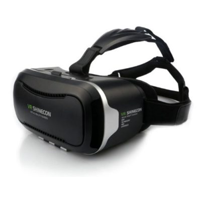
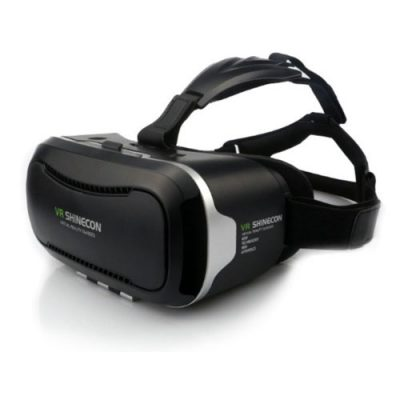
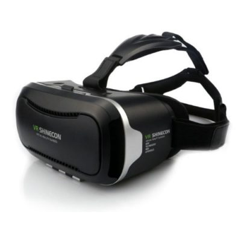

home
trips
form
contact
info

Virtual reality trip
Did you always wanted to travel, but had fear to leave the house? Than we are here to offer you some documentaries you can follow from your home. You will probably ask yourself how you can follow a trip from your home . We are doing this by using virtual reality (VR).
What is virtual reality?
Virtual reality is a virtual reality, it is not real. To join this virtual reality you have to put on a vr-headset. This can be as simple as a homemade cardbox VR-headset. You can buy a very expensive VR-headset, for this journey you will have enough with a cardbox one.
I do not have a VR-headset, what now?
If you do not have a VR-headset, do not worry. You can follow the documentaries without a VR-headset. We have to admit that watching the documentaries without VR glasses is a less intense experience than with VR glasses. We will have to admit that the experience different is without a VR-headset. It is not as intense. You will not be able to look around you. You will not have the possibility to look around. But think about it, a VR-headset will not have to be expensive.
What kind of documentaries are we showing?
We are only showing nature documentaries. This can be documentaries about Dutch landscapes, but also think about places on the other side of the world. Take a look at all our documentaries: Travel with us through the Oostvaardersplassen (A Dutch nature Bottom of the Atlantic ocean, Take a look at the Amazone, Australia's wildlife, Life on the south pole, The Netherlands in bloom, At safari in Africa, Life on iceland, Our waters and at last we are offering the documentarie: Wildlife in the cities. As you can see we have 10 documentaries to offer.
About the documentaries.
Travel with us through the Oostvaardersplassen. In this documentarie we are taking you with us through the beautiful Oostvaardersplassen. We are taking you with us from the sky till the bottom of our lakes. Duration: 90 minutes.
Bottom of the Atlantic ocean. Take a look at the bottom of the Atlantic ocean. This documentarie is specified for the bottom of the Atlantic ocean only. Duration: 113 minutes.
Take a look at the Amazone. In this documentarie we are showing the largest jungle in the world. Duration: 130 minutes.
Australia's wildlife. In this documentarie we follow all kinds of animals. Think about scary spiders, but did you ask yourself what animals are swimming in the coral? Duration: 70 minutes.
Life on the south pole. This is a documentarie only about penquins. We are following 3 penquin families. Duration: 60 minutes.
The Netherlands in bloom. We will show you things from the Wadden Islands to the beautiful provence of Limburg. We are showing The Netherlands at its full potentional. Duration: 150 Minutes.
At safari in Africa. Take a look with us at the Savanne, we will see tigers and giraffes and much more. We will also travel trough the Sahara and show you some special places. Duration 120 minutes.
Life on Iceland. In this documentarie we will be following one of the locals. He shows us everthing he knowes, but also he is facing some surprises. Duration : 80 minutes.
Our waters. We will take you with us from the North Sea to the local lakes. Curious about what is swimming in the Dutch waters? Duration: 125 minutes .
Wildlife in the cities. Did you ever think about the animals that life in de big cities? In this documentarie we will take you to Los Angeles, New York and Washington DC.
We are hoping that you will have recieved enough information about our journeys and the way we are presenting them. Do you want to contact us or know more about us? Then take a look at our “more info” page.
 
